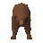
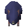

Ruins
Location at 2966, 3697 · Wilderness
Open on the world map → Open in knowledge graph →
NPCs
| NPC | Level | Spawns | Notable drops |
|---|---|---|---|
 Bear | 21 | 1 | |
| 6 | 3 | ||
 Giant rat | 3 | 3 | |
| 2 | 5 | ||
| 1 | 16 | ||
| 1 | 6 |
Open on the world map → Open in knowledge graph →
| NPC | Level | Spawns | Notable drops |
|---|---|---|---|
 Bear | 21 | 1 | |
| 6 | 3 | ||
 Giant rat | 3 | 3 | |
| 2 | 5 | ||
| 1 | 16 | ||
| 1 | 6 |